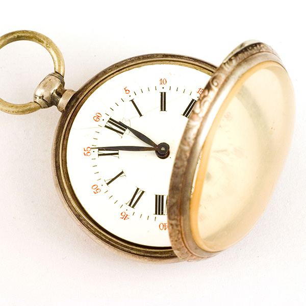

Most economists are in agree¬ment that the inflation in the United States
during the past three years has been the worst since the early 1940′s,
taking ac¬count of both severity and dura¬tion. But they cannot agree on the
nature of the inflation that is en¬gulfing the American economy. To some,
inflation denotes a spectac¬ular rise in consumer prices; to others, an
excessive aggregate de¬mand; and to at least one econo¬mist, it is the
creation of new money by our monetary author¬ities.
This disagreement among econ¬omists is more than an academic difference on
the meaning of a popular term. It reflects profes¬sional confusion as to the
cause of the inflation problem and the pol¬icies that might help to correct
it. A review of some basic prin¬ciples of economics that are ap¬plicable to
money may shed light on the problem.
Two basic questions need to be answered: (1) What are the fac¬tors that
originally afforded value to money, and (2) What are the factors that effect
changes in the “objective exchange value of mon¬ey” or its purchasing power?
Money is a medium of exchange that facilitates trade in goods and services.
Wherever people pro¬gressed beyond simple barter, they began to use their
most market¬able goods as media of exchange. In primitive societies they
used cattle, or measures of grain, salt, or fish. In early civilizations
where the division of labor extended to larger areas, gold or silver emerged
as the most marketable good and finally as the only medi¬um of exchange,
called money. It is obvious that the chieftains, kings, and heads of state
did not invent the use of money. But they frequently usurped control over it
whenever they suffered budget deficits and could gain revenue from currency
debasement.
This leads to the interesting conclusion that the universal use of paper
monies today would be in¬conceivable without their prior use as
“substitutes” for real money, such as gold and silver, for which there was a
nonmonetary demand. Only when man grew ac¬customed to these substitutes, and
governments deprived him of his freedom to employ gold and silver as media
of exchange, did govern¬ment tender paper emerge as the legal or “fiat
money.” It has value and purchasing power, although it lacks any nonmonetary
demand, because the people now direct their monetary demand toward
govern¬ment tender paper. If for any reason this public demand should cease
or be redirected toward real goods as media of exchange, the fiat money
would lose its entire value. The Continental Dollar and various foreign
currencies over the years illustrate the point.
GMO foods started appearing in the news in the 1980s and 1990s. These foods
are made when scientists insert foreign DNA from plants or animals into
cells that change the plant or animal's traits. Some GMO foods are bred to
be resistant to herbicides and pesticides. Other changes can include
increasing the speed with which an animal comes to maturity or reducing the
signs of produce spoilage. In fact, one company just received FDA approval
to grow genetically engineered salmon bred to grow faster. Ecologists are
concerned that this salmon may escape its breeding grounds and contaminate
wild salmon stocks.
Many scientists state that, because we've been eating GMO foods for more
than a decade and no serious health effects have been uncovered, GMO foods
are safe. But some illnesses take much longer than a decade or two to
appear. Testing on GMO foods is controlled by the companies that own the
patents on the genes, and no tests have been run longer than three months.
One of the problems caused by GMO crops has been the increase in the amount
of herbicides farmers use on their crops. Since 1992, the use of glyphosate,
the ingredient in the herbicide Roundup, has increased by more than 200
million pounds. This has spurred an epidemic of super weeds that have become
resistant to the herbicides, which in turn has forced farmers to apply more
and different herbicides. And the cycle continues. Most consumer advocates
believe that any foods that contain GMO crops should be labeled so consumers
can choose what they eat. Huge corporations are fighting these labels, and
many ballot initiatives requiring these labels have failed.
All you can do is avoid eating corn, soybean, or canola oil, and try to
avoid foods with a label, especially highly processed foods. And educate
yourself on this issue so you can vote on referendums when they appear on
the ballot.
Source: Dr. Jonathan Wright, - Eating Clean For Dummies
[https://www.dummies.com/article/body-mind-spirit/physical-health-well-being/diet-nutrition/healthy-eating/gmo-foods-228186/]
The View of World in 2100

Antique watch
The year 2100 stands as a distant horizon, a point in time that tantalizes
the human imagination with the possibilities of a vastly different world.
While predicting the exact course of events is impossible, we can envision a
future shaped by ongoing trends and emerging challenges, providing a
speculative glimpse into the world of the 22nd century.
It is virtually certain that technological innovation will continue to be a
driving force behind societal change. Artificial Intelligence (AI) and
automation are poised to reach new heights, fundamentally altering the labor
landscape. Jobs we know today may become obsolete, but new, unforeseen
opportunities will arise. Robotics, biotechnology, and nanotechnology will
have transformed industries, healthcare, and daily life. The fusion of the
digital and physical worlds, known as the Internet of Things, will be
omnipresent, creating smart cities and revolutionizing transportation,
healthcare, and energy systems.
The world will be grappling with the impacts of climate change, a challenge
that has only intensified over the decades. Rising sea levels, extreme
weather events, and resource scarcity will necessitate global cooperation.
Renewable energy sources will dominate the energy landscape, offering a
sustainable alternative to fossil fuels. Innovations in carbon capture and
sustainable agriculture will be vital in mitigating the effects of a
changing climate. The imperative for environmental conservation and
restoration will be more pronounced than ever, as biodiversity and
ecosystems become increasingly threatened.
The global landscape of 2100 will likely see a shifting of geopolitical
power. Emerging economies like China and India will have solidified their
positions as global leaders, while the influence of traditional powers, such
as the United States and Europe, may have receded to some extent.
International cooperation will be vital in addressing transnational issues
like climate change, cybersecurity, and pandemics. The global community may
have forged a new world order, reflecting the multipolar nature of the 22nd
century.
Societies will be more diverse and interconnected. Migration patterns will
continue to reshape demographics, leading to more multicultural and
cosmopolitan cities. Social norms will evolve, addressing issues of gender
equality, inclusivity, and human rights. Technology may offer new ways of
connecting people across cultures and bridging language barriers, fostering
greater understanding and cooperation.
As technology advances, society will confront profound ethical questions.
The use of AI, genetic engineering, and advanced medical treatments will
prompt discussions about human enhancement, privacy, and the boundaries of
human experience. These debates will challenge societies to redefine their
values and ethics, while also ensuring that technology is harnessed for the
greater good.
Advances in healthcare and medicine will extend human life expectancy. Aging
populations will become more common, necessitating adjustments in healthcare
systems, pension plans, and retirement policies. The focus will shift from
treating diseases to preventing them, with personalized medicine and genetic
therapies becoming the norm.
In conclusion, the world in 2100 is a canvas on which countless
possibilities are painted. While this essay provides a glimpse into a
plausible future, it is essential to remember that the actual course of
events will depend on the choices made by individuals, governments, and
societies along the way. The key to a positive and sustainable future lies
in responsible stewardship of our planet and a commitment to addressing the
challenges that lie ahead. The 22nd century holds immense promise and
potential, but it also demands wisdom and foresight from the generations
that will shape it.